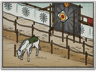

Basic Unit Statistics (can be modified by difficulty level, arts, skills, traits and retainers)
| Recruitment Cost | 1200 | |
| Upkeep Cost | 300 | |
| Melee Attack | 15 | 42% |
| Charge Bonus | 35 | 70% |
| Bonus vs Cavalry | 15 | 50% |
| Melee Defence | 5 | 14% |
| Armour | 7 | 46% |
| Morale | 15 | 30% |
Strengths & Weaknesses
- Excellent on the charge and strong morale.
- Very good against other cavalry.
- Weak against yari and naginata units.
Abilities
- Second Wind - This restores a portion of nearby units' stamina, allowing them to fight longer and harder.
- Wedge Formation - Trained to charge in a wedge formation in order to better penetrate enemy formations
Requires
- Buildings: 

- Resources:

Description
Only the very best samurai are chosen for this spear-armed cavalry unit. The presence of such revered warriors encourages nearby comrades.
These elite warriors ride heavy horses, and their power in full charge is focused to deliver a devastating spear attack, crashing through many enemies with ease. Great guard samurai have high morale and great prestige, making them inspiring to nearby friendly units. The guard are vulnerable to missile attacks. Spearmen, the other great danger to cavalry, can be flanked by a careful guard commander and then smashed by the guards' heavy charge. Historically, the Tokugawa created several guard units during and immediately after their rise to the Shogunate. The "oban" or great guard were the personal bodyguards of Tokugawa Ieyasu in 1590. By 1600, these guards had multiplied with many "kumi" or companies in existence. Additional guard units were also raised: the "Ryoban" or "Two Guards of the Body Guard" and the "Inner Guard". There was another force called the "Honourable Body Guard" who only guarded the Shogun at night in Edo. A generation after the Sengoku Jidai, the "Goshinban" or "Honourable New Guard" were added to the roster, although this may have been to keep troublesome younger members of samurai families out of trouble and under the Shogun's eye!